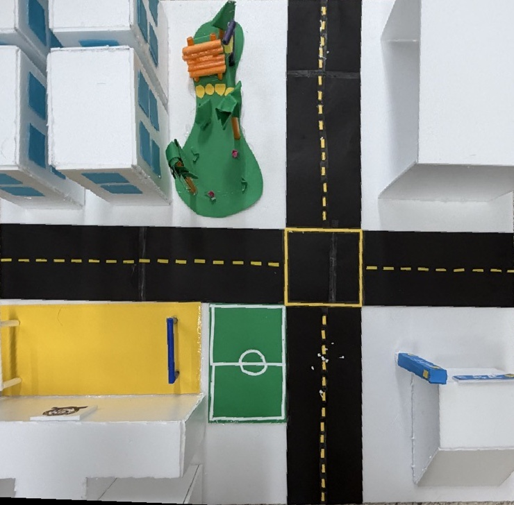

적설 2cm에도 멈춘 출근길, 가장 빠른 순서로 도는 자동 제설차
ICE-ZERO · 라즈베리파이 Pico 2 W 제설차와 맥 서버의 최적 경로, Claude 눈 표시로 만든 사거리 제설 모형
프로젝트 개요
가상의 사거리를 92.5×91cm 모형으로 만들고, 라즈베리파이 Pico 2 W 제설차가 북동쪽 제설 기지에서 나와
네 갈래를 가장 빠른 순서로 치우게 했다. 맥 서버가 경로를 계산하고, Claude는 사진 속 눈 위치를 표시하며,
웹 화면에서 차를 직접 몰 수도 있다.
주제 선정 동기
“적설량이 2cm 안팎이었지만 출근길 정체와 제설 작업 미흡이 보도되었다.”
— 뉴시스, 2018. 1. 9.
적은 눈이라도 제설 시기를 놓치면 출근길 전체가 멈춘다. 사람이 도로마다 눈을 확인하고
출동 순서를 정하는 동안 시간이 흐른다. 그래서 ‘어느 순서로 돌아야 가장 빨리 끝나는지’ 계산해
바로 출동하는 과정을 자동화하기로 했다.
전체 동작 과정
- 연결 — 맥 서버와 제설차가 아이폰 핫스팟(2.4GHz)에서 Wi-Fi UDP로 이어진다.
- 눈 표시 — 웹에서 사진을 찍고 보안키를 넣으면 Claude가 도로 위 눈을 상자로 그린다. 차는 움직이지 않는다.
- 경로 계산 — ‘전체 청소’를 누르면 순서 24가지를 펌웨어 경로 계획으로 비교해 가장 빠른 것을 고른다.
- 출동 — 기지에서 나와 갈래 끝까지 눈을 밀고 후진하며 네 갈래를 돈 뒤 차고로 돌아온다(약 142초, 계산값).
- 감시·정지 — 0.5초마다 오는 차 위치가 /monitor 지도에 뜨고, 정지 버튼이 언제나 우선한다.
수동 조작 — 맥의 Chrome·Edge가 USB(Web Serial)로 Pico를 직접 움직인다.
화살표를 누르는 동안만 가고, 떼면 선다.
모형 이미지

제설 기지
N
E
S
W
사거리 모형 92.5×91cm · 위에서 본 모습
Raspberry Pi Pico 2 W의 기능
PICO 2 W자동 주행맥과 Wi-Fi UDP
- · 28BYJ-48 ×2 + ULN2003 ×2로 바퀴 구동
- · 받은 계획대로 갈래 밀기 → 후진 → 차고 복귀
- · 0.5초마다 위치 전송, 5초 끊기면 일시 정지
PICO 2 W수동 조작맥과 USB Web Serial
- · 웹 화면이 USB로 조작 프로그램을 올려 실행
- · 화살표를 누르는 동안만 움직이고 떼면 정지
- · 지금은 전원도 맥 USB에서 받는다
Pico 한 대가 Wi-Fi(자동)와 USB(수동) 두 길로 명령을 받는다.
서보·초음파·버튼·LED·부저는 펌웨어에 핀만 정해 둔 선택 부품이다.
프로젝트의 독창성
- 화면과 차가 같은 길 — 서버가 펌웨어의 경로 계획 함수를 그대로 불러 순서 24가지를 비교한다.
지도에 그린 길이 곧 차가 달리는 길이다.
- 천천히 출발, 빠르게 주행 — 1.2ms/스텝으로 출발해 2500스텝 동안 0.6ms까지 가속한다(초당 약 19→38mm).
처음부터 0.6ms로 출발하면 보드 위에서 멈춰 떨기만 했다(11월 1일 시험).
- AI는 보조, 출동은 코드 — Claude는 눈 위치를 상자로 보여 줄 뿐 차를 움직이지 않는다.
보안키가 있어야 부를 수 있고, 키는 저장소에 두지 않는다.
- 사진 시험 — 모형 사진 42장 중 눈이 있는 19장에서 Claude가 모두 눈을 찾았다.
어둡게·노란 조명·흐리게 바꾼 사본에서도 찾았고, 규칙 검출기는 최대 3장을 놓쳤다(표본이 작은 시험).
설계도 — 시스템 구성 · 보드와 출동 경로 · Raspberry Pi Pico 2 W 배선도
① 시스템 구성도 — 맥 서버 · 웹(/app · /monitor) · Claude · 제설차 Pico 2 W(Wi-Fi UDP · USB)
② 보드 실측과 출동 경로 — 925×910mm · 북동쪽 제설 기지 · 차체 치수
③ Raspberry Pi Pico 2 W 제설차 배선 — 스텝모터 ×2 장착 · 서보·초음파·버튼·LED·부저는 선택